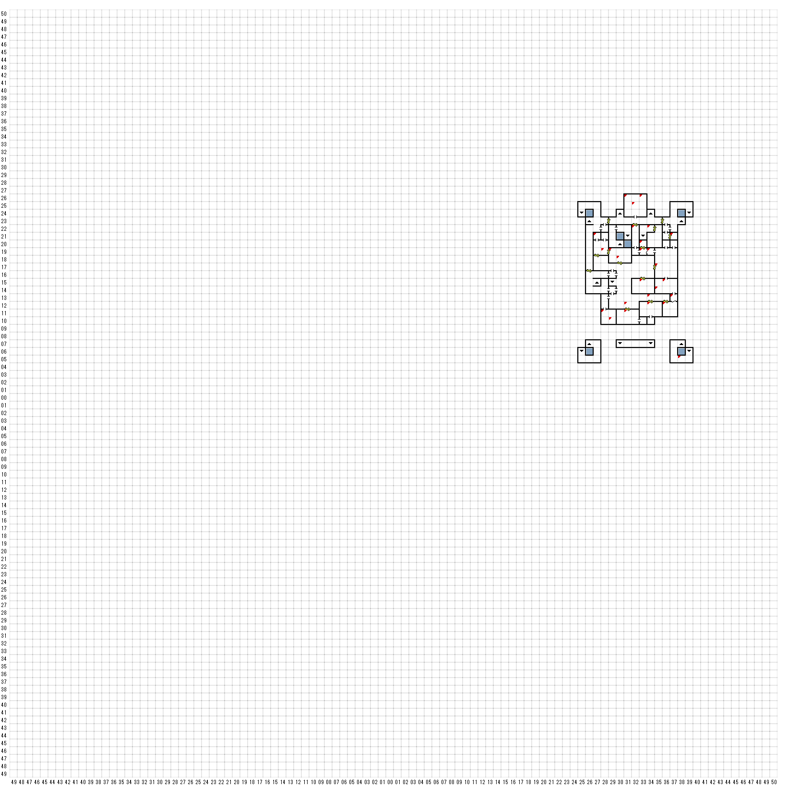

【 東：27，北：21 】
東の壁にボタン
宝箱
大きな鞄の中に入っていたのは、少しばかり衝撃的な
・・・まぁ、一種の鎧というかなんというか・・・
そんな代物であった。すなわち、それは
黒い革製で、金属の鋲で縁取られた、
ごつい作りのブラジャーだったのである。
その使い途がどのようなものであったのか、
はっきりとわかるわけではないが、
もしそれがふさわしい人物に着用されたならば、
ある種の・・・その・・・つまり、まぁなんといううか、
魅力を醸し出す”可能性”があるようであった。
さらにもっと困ったことに、その奇妙な
ブラジャーと一緒に、箱の奥から黒いムチが
出てきた。さてさて、期先の小部屋で、いったい
こんなものを難に使っていたのだろう？
STUD-CUIR BRA＋２
BULLWHIP
【 東：28，北：19 】
明るく彩られた壁は、昔はこの小さな私室を
特徴づけていたことであろう。
今はさすがに往時のつやは消え失せていたが、
それでも明るく陽気な様子は失われていなかった；。
【 東：28，北：11 】
部屋の中央には、古い木のテーブルと
いくつかの椅子の残骸が積み重なっていた。
そして、壊れた酒瓶の破片が
床一面に散乱していた。
【 東：29，北：19 】
KNOCKKNOCK 24で開けた
【 東：29，北：10 】
探す
奇妙な黒いかぎが二つ付いている鍵輪が
みつかった。その鍵の握りの部分は、
小さなスペードの形をしていた。
2 KEYofSPADES
【 東：30，北：18 】
そ部屋の壁は、天使やバラやつる草の
雪花石膏彫刻で飾られ、
歳月を経て石膏がどす黒くなっている
にもかかわらず、その装飾の見事な細工は
観る者に畏敬の念を抱かせた。
大の男三人が横になっても
まだ余裕がありそうな大きなベッドの残骸が
床に崩れ落ちており、部屋中に
もとは家具であった朽ちた木材が
散乱していた。
当然のことながら、この部屋は
妃の寝室だったのであろう。
妃が若い男たちと奇妙な儀式を行っていた
という噂があったが、この部屋を見る限りでは
それは本当のこととは思えなかった。
【 東：31，北：26 】
誰が飲みますか
毒に冒された
【 東：31，北：12 】
KNOCKKNOCK 24で開けた
【 東：31，北：11 】
この印象的な外観を持つ都築部屋は、
一種の客間だったようである。
少なくとも、ドアにかかっている
小さな掲示を読む限りはそう思えた。
チェックアウトは午前10時です
【 東：32，北：25 】
ルーン文字と悪魔のような小像が彫りこまれた、
巨大な意思の祭壇が床からせりあがってきた。
グロテスクな像は奇怪な儀式の様子を
演じており、その表面には濃い赤色のシミが
こびりついていた。恐ろしい物語を伝える
その残忍な彫物、神聖ならざる目的のために
あたりに冷たい沈黙をもたらすかのようであった。
そのイメージは、ひとたびは城にそなわっていた
ケルト風の魅力を一瞬のうちに消し去ってしまい、
リアルで恐ろしい悪夢によって、
潔癖さはすべて失われてしまった。
（探す）
汚れた石板を探ってみると、
祭壇の中に押し込むことができる、
スイッチのような三つの特別なシンボルが見つかった。
そのシンボルは、炎の宝珠、
ヤギの頭、そして杖であった。
祭壇のどのシンボルを押す？
炎の宝珠
ヤギの頭
魔法の杖
（５回押せる）
（頭・頭・宝珠・杖・頭）
祭壇の表面が陥没し始めた！
祭壇の表面が大きく開き、
中から暗闇に通じる穴が
現れた。
あなたは：
祭壇の穴の中に飛び込む
祭壇を放っておいてその場を立ち去る
＞祭壇の穴の中に飛び込む
穴の中に飛び込んだ！
全員、ドサッという音と共に落っこちた。
（ダメージ）
１F E32 N25へ
目の前の門の柵の向こう側で、なにかがうごめいているのが目に入った。
門の向こう側で、なにかがまたもや素早く動いた。
それが矢のようなスピードで襲ってきたとき、唯一目に映ったのは、なにかが動くかすかな残像だけであった。
（エンカウント）GIANT SERPENT
【 東：32，北：22 】
KEY of RAMMで開く
【 東：33，北：26 】
誰が飲みますか
リフレッシュした
【 東：33，北：20 】
宝箱
ワナを外す
箱の中には、おそらくヤギの頭で作った
奇妙な仮面が入っていた。多少壊れ始めている
ところもあったが、ほとんど完全といってもよいほど
状態は良かった。その仮面の横には、
凝った装飾の施された金のダガーが置いてあった。
そのつかの部分には数個の宝石が
埋め込まれ、二つのルーン文字が
刻まれていた。
ヤギの仮面
御羊のダガー
【 東：33，北：19 】
KEYofRAMMで開く
【 東：33，北：15 】
昔は、装飾を施した家具と
華やかな壁がこの客間を
美しく彩っていたことであろう。
しかし今はそれも色あせ
椅子も塵に帰してしまっていた。
【 東：34，北：22 】
冷たい空気が門の柵の間を通り抜けてきた。
その風は門の向こう側から城の中に
吹き込んでいるようだった。
遠くの方からなにかの鳴き声が
聞こえてきたようにも思えたが、
もしかするとただの風の音だった
かもしれない。
【 東：34，北：19 】
（西の壁探す）
ボタンを押した＞隠し扉開く
【 東：34，北：13 】
KNOCKKNOCK 24で開けた
【 東：34，北：12 】
ここはとりたててどうということはない部屋で、
壁にもなにもなく、いくつかの壊れた寝台が
残っているだけであった。
【 東：35，北：17 】
歳月による崩壊がどれほどすすんでいようと、
その部屋の豪華さは失われていなかった。
ここはおそらく城の中で
最大の寝室であろう。
城主はこの部屋を自分の
私室として用いていたに違いない。
壁は壮大な手描きの壁画で
飾られており、部屋の隅ずみまで
職人の丁寧な手仕事で仕上げられている。
かつてこの部屋を彩った美しき輝きは、
このくらい廃墟の中にもかすかに
残っていた。
向こう側の壁際には、支柱のついた
ベッドの残骸が崩れ落ちていた。
そしちえ、崩壊した家具は
部屋中に散らばっていた。
【 東：35，北：14 】
机の残骸を探っていると、
机から壁の中につながっている
ワイヤーがみつかった。
あなたは：
後ろに下がってワイヤーを引く
身を屈めてワイヤーを引く
ワイヤーを放ってその場を立ち去る
＜後ろに下がってワイヤーを引く＞
秘密の戸棚が見つかった！
宝石箱を開けてみると、中には
鍵が一つと小さな本が入っていた。
本の状態は悪くなかった。それは、
判読できない不思議な暗号で綴られた、
ノートか日記のようであった。
王の日記
GOLD KEY
【 東：36，北：15 】
昔は書庫であり書斎であったこの部屋の
壁際には、朽ち果てた本棚と崩壊したほんの
残骸が積み重なっていた。
目の前の壁のところには
机が崩れ落ちている。
ほとんどの本は形を成さないほど
崩れており、中を読むことは
できなかった。それでもいくつかの
本はタイトルを読むことができた。
「せかいのれきし」
「数学大百科事典」
「2週間で１５ポンド痩せて
その体型を維持する法」
「呪文について」
最後の二冊は何かの役に
立ちそうであったが、残念なことに
両方ともかなり腐敗が進んでおり、
手に入った情報といえば
面白いキャベツの料理法だけであった。
【 東：36，北：12 】
腐った小さな寝台いくつかとさびた花瓶が一つ、
この簡素な小部屋に残っているのは
ただそれだけであった。
その部屋を見ていると
王の隠し子と噂される子供に与えられた
奴隷娘の話が思い出されてきた。
確たる証拠がある話ではなかったが、
王は彼女が14才の年、週に一度は
彼女の床を訪れたという。
過酷なまでの追及のかいもなく、
妃はその現場を捕らえることはできなかった。
そして次第に、王は壁をすり抜けることができる
魔法の力を持っているといううわさが広がった、
と言われている。
【 東：37，北：21 】
腐った木のカゴの残骸が
床に山をなしていた。その中には
何が入っていたにせよ、すべては
塵になってしまっていた。
【 東：37，北：13 】
（探す）
南の壁のボタンを押せる
【 東：38，北：5 】
目の前の角を曲がった向こう側から、
なにかがぶつかったような音が聞こえる・・・